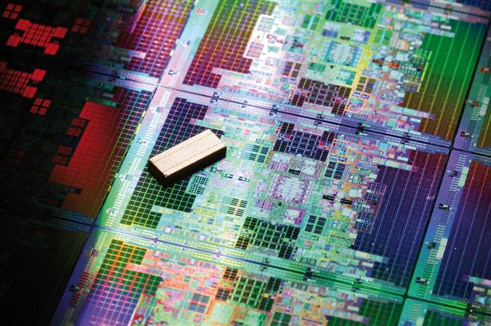

Profesor: Jose Muñoz
unidades de credito: 5 u/c
código de materia: ELN-32225
salón: piso 3/15
horas a la semana: 5
descripción: El estudio de la asignatura permite al alumno conocer los fundamentos de sistemas electrónicos digitales tan utilizados en la actualidad como son los microprocesadores y los microcontroladores, tanto a nivel de arquitectura como de programación. Esta asignatura es una de las más importantes para la adecuada formación de un Graduado en Ingeniería en telecomunicaciones. Dado que como todo el mundo ya conoce los sistemas digitales en la actualidad prácticamente se basan en gran medida en las aplicaciones de estos dispositivos avanzados. Se pretende que al finalizar la asignatura el alumno conozca las características fundamentales del diseño digital con microprocesadores y con microcontroladores, conociendo las características fundamentales de dichos circuitos.
